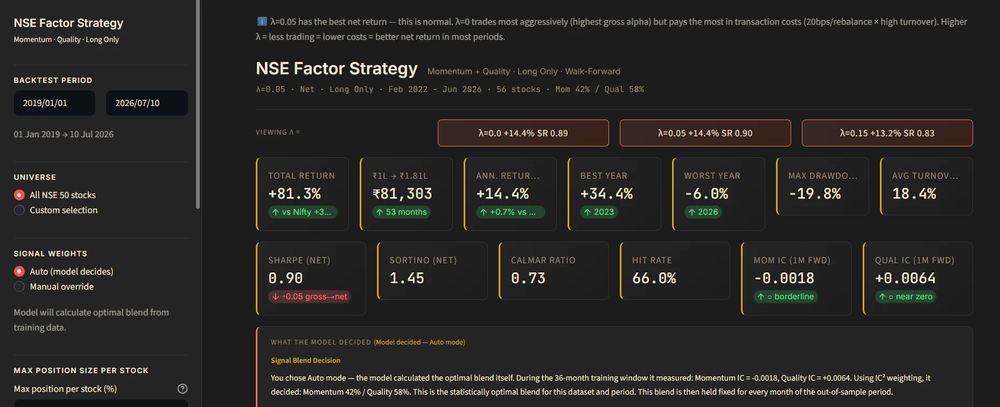
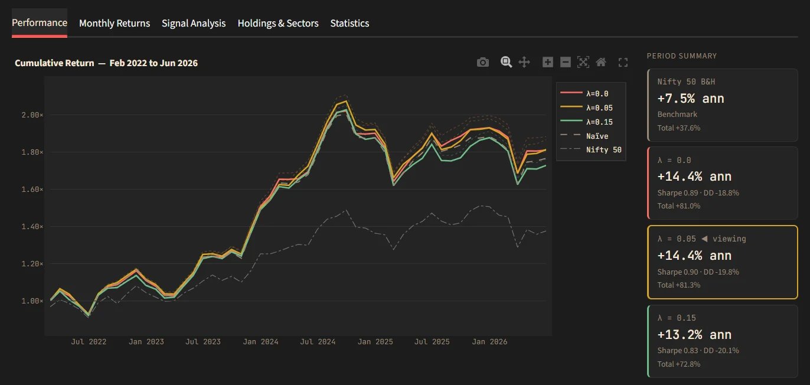

Do momentum and quality work on Indian large-caps after trading costs?
- Approach
- Rank Nifty 50 stocks on momentum and quality, weighting the two signals by their measured information coefficients (IC²) over a 36-month training window.
- What I built
- A long-only strategy using a quadratic-programming optimiser with position limits, tested walk-forward with transaction costs, plus an interactive dashboard to compare turnover settings.
- Total return
- +81.3%Nifty 50: +37.6%
- Annualised
- +14.4%Nifty 50: +7.5%
- Sharpe, net
- 0.90Sortino 1.45
- Max drawdown
- (19.8%)
- Hit rate
- 66.0%
- Result
- Out of sample from February 2022 to June 2026, net of costs, the chosen setting (λ = 0.05) compounded to 1.81× against 1.38× for the index. Best year +34.4% (2023), worst year (6.0%) (2026).
- Turnover
- The highest-turnover version had the best gross alpha but paid the most in costs, so it didn’t win net; the moderate setting did. Momentum’s measured IC was borderline (−0.0018) against quality’s +0.0064, so the blend leaned 58% quality.
Backtest results are hypothetical and net of modelled transaction costs.

